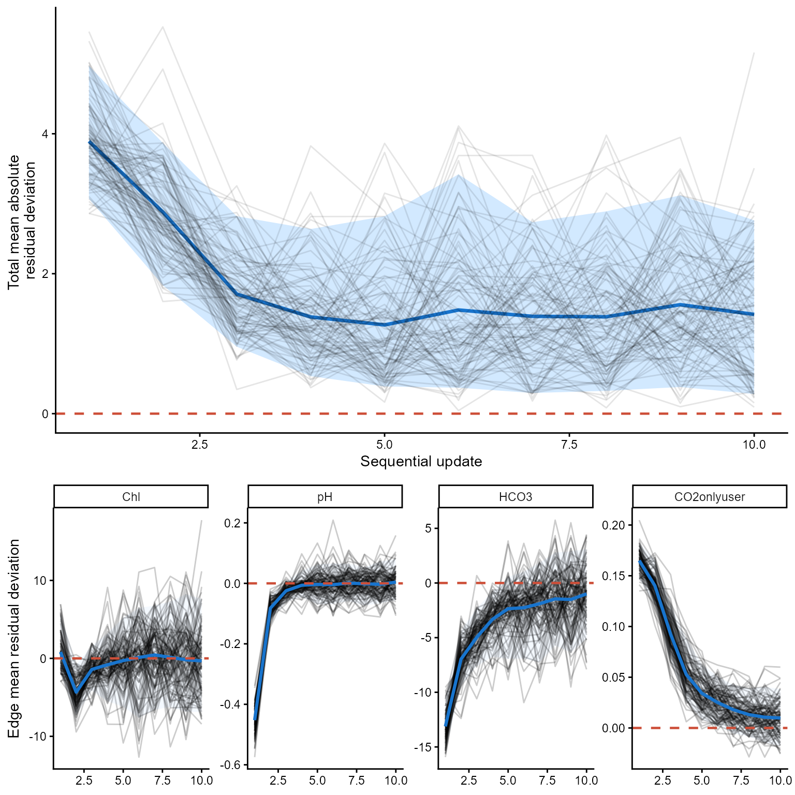

Introduction
This section is intended to experiment with and explore the PPMN method/framework. To understand how it behaves under different conditions, one of the most informative approaches is to “crash-test” it. Understanding the limits of the method is important for determining what it can and cannot do, as well as for identifying possible new diagnostics to assess when it fails.
I have only recently started exploring this aspect of the PPMN method, as my initial focus was on developing and implementing the method itself. Nevertheless, there are already some situations in which failure is expected. For example, a highly unrealistic priors (e.g., the foundational PPMN) can cause the method to break down.
Simple sequential update
Below is an example of a setting in which the method does work. Sequential updating is a particularly important use case I have in mind for the PPMN framework. Suppose that we obtain batches of 100 samples from an ecosystem (e.g, for example, from a lake catchment area) once per year over a period of five years. Each batch is then fed sequentially into the PPMN, allowing us to examine how the model updates as new data become available. The figure following the code illustrates this updating process.
library(HeMiE)
library(ggplot2)
library(cowplot)
#set number of sequential updates
number_sequential <- 5
#create a network
example_data <- data.frame(
edge = c(
rep("Chl~TP", 3),
rep("Chl~TP", 2),
rep("pH~Chl", 3),
rep("HCO3~pH", 3),
rep("CO2onlyuser~HCO3", 2)),
`function` = c(
rep("sigmoidal", 3),
rep("log10", 2),
rep("sigmoidal", 3),
rep("sigmoidal", 3),
rep("logit", 2)),
transformation = c(
rep("log", 3),
rep("log10", 2),
rep(NA, 3),
rep(NA, 3),
rep("log", 2)),
parameter = c(
"b0","b1","b2",
"b0","b1",
"b0","b1","b2",
"b0","b1","b2",
"b0","b1"),
estimate = c(
100, 4, 0.5, # Chl ~ TP
-1.1, 1, # Chl ~ TP
7.5, -6, 4, # pH ~ Chl
90, 7.5, 0.2, # HCO3 ~ pH
2.8,-0.7), # CO2onlyuser ~ HCO3
error = c(
20, 0.5, 0.25,
0.3, 0.4,
4, 2, 1,
20, 1.5, 0.05,
0.3, 0.1))
#create formula
formula <- list(c(fun="sigmoidal", edge="Chl~TP", trans="log"),
c(fun="log10", edge="Chl~TP", trans="log10"),
c(fun="sigmoidal", edge="pH~Chl"),
c(fun="sigmoidal", edge="HCO3~pH"),
c(fun="logit", edge="CO2onlyuser~HCO3", trans="log"))
#build ppmn
mod1 <- build_ppmn(formula, example_data)
#this is the ppmn structure
mod1$PlotDBN
#create a dgp ppmn
mod_dgp <- mod1
#select some 'true' and fixed params
true_par <- list(
`ef1` = c(b0=110, b1=4.5, b2=.7),
`ef2` = c(b0=-0.8, b1=.9),
`ef3` = c(b0=9, b1=-7, b2=6),
`ef4` = c(b0=100, b1=7, b2=1),
`ef5` = c(b0=2.4, b1=-.5))
#store the params
for(e in names(mod_dgp$Parameters)){
for(p in names(mod_dgp$Parameters[[e]])){
mod_dgp$Parameters[[e]][[p]]["mu"] <- true_par[[e]][p]}}
#gamma simulator
rgamma_sim <- function(mu, sd){rgamma(length(mu), shape = mu^2/sd^2,rate = mu/sd^2)}
#set TP concentration
set.seed(123)
TP_sim <- rgamma(100, 200^2/150^2, 200/150^2)
#create storage location
test_dfs <- list()
#create 5 realized data sets
for(d in seq_len(number_sequential)){
mu_Chl <- .ppmn_predict_edge("sigmoidal", true_par$ef1, trans="log", TP_sim)
Chl_sim <- rgamma_sim(mu_Chl, mu_Chl/1.5)
mu_pH <- .ppmn_predict_edge("sigmoidal", true_par$ef3, trans=NA, Chl_sim)
pH_sim <- rgamma_sim(mu_pH, rep(.5, length(mu_pH)))
mu_HCO3 <- .ppmn_predict_edge("sigmoidal", true_par$ef4, trans=NA, pH_sim)
HCO3_sim<- rgamma_sim(mu_HCO3, mu_HCO3/3)
mu_CO2 <- plogis(true_par$ef5[1]+true_par$ef5[2]*log(HCO3_sim))
CO2onlyuser <- rbeta(length(mu_CO2), shape1 = mu_CO2*20,
shape2 = (1-mu_CO2)*20)
test_dfs[[d]] <- data.frame(
TP = TP_sim,
Chl = Chl_sim,
pH = pH_sim,
HCO3 = HCO3_sim,
CO2onlyuser = CO2onlyuser)}
#sequentially update the ppmn on the different data sets
mod_list <- vector("list", (number_sequential+1))
mod_list[[1]] <- mod1
for(u in 2:length(mod_list)){
m <- u-1
mod_list[[u]] <- update_ppmn(mod_list[[m]], test_dfs[[m]])}
#plot df correct lengths first one should be duplicated
plot_dfs <- c(test_dfs[1], test_dfs)
#plot all childs and variables
vars <- c("Chl", "pH", "HCO3", "CO2onlyuser")
var_list <- setNames(
lapply(vars, function(v){Map(function(mod, dat)
marginal_ppmn(mod, child = v, data = dat),
mod_list, plot_dfs)}), vars)
#create labels for above the figures
labs <- c("Foundational PPMN", paste("Update", seq_len(number_sequential)))
labtext <- lapply(seq_len(number_sequential+1), function(l)
ggplot() +
annotate("text", label=labs[l], x=0, y=0)+
theme_void())
#create correct order for figs
figs <- seq_len(number_sequential+1)
fig_list <- c(
labtext[figs],
lapply(figs, \(i) var_list$Chl[[i]][[3]]),
lapply(figs, \(i) var_list$pH[[i]][[1]]),
lapply(figs, \(i) var_list$HCO3[[i]][[1]]),
lapply(figs, \(i) var_list$CO2onlyuser[[i]][[1]]))
#plot all the figures together
cowplot::plot_grid(
plotlist = fig_list,
ncol = (number_sequential+1),
rel_heights = c(1, 3, 3, 3, 3, 3))
Sequential updating and poorly specified priors at roots
If poorly specified priors are present at root nodes, biased predictions can propagate downstream through the network. As a consequence, the corresponding edge functions may also converge toward parameter regions that are ecologically implausible or otherwise outside a reasonable range. Such behaviour can, however, be diagnosed by visually inspecting the marginal plots or by examining the residual distributions in the boxplots.
At the same time, this provides a useful learning opportunity. If the foundational PPMN is based on a large amount of synthesized literature, but repeated updating with new data consistently drives the model away from a decent fit, this indicates a substantive issue that requires explanation. Either the new data are unrepresentative or problematic, or the prior information synthesized from the literature does not generalize to the system under study. In that way, disagreement between the foundational PPMN and new observations can itself reveal an important gap in our understanding.
#create a network
example_data <- data.frame(
edge = c(
rep("Chl~TP", 3),
rep("Chl~TP", 2),
rep("pH~Chl", 3),
rep("HCO3~pH", 3),
rep("CO2onlyuser~HCO3", 2)),
`function` = c(
rep("sigmoidal", 3),
rep("log10", 2),
rep("sigmoidal", 3),
rep("sigmoidal", 3),
rep("logit", 2)),
transformation = c(
rep("log", 3),
rep("log10", 2),
rep(NA, 3),
rep(NA, 3),
rep("log", 2)),
parameter = c(
"b0","b1","b2",
"b0","b1",
"b0","b1","b2",
"b0","b1","b2",
"b0","b1"),
estimate = c(
2000, 4, 1, # Chl ~ TP #bad priors for asymptote and scale
-0.3, 4.5, # Chl ~ TP #bad priors for slope and intercept
7.5, -6, 4, # pH ~ Chl
90, 7.5, 0.2, # HCO3 ~ pH
2.8, -0.7), # CO2onlyuser ~ HCO3
error = c(
20, 0.3, 0.2,
0.2, 0.1,
4, 2, 1,
20, 1.5, 0.05,
0.3, 0.1))
#build ppmn
mod1 <- build_ppmn(formula, example_data)
#sequentially update the ppmn on the different data sets
mod_list <- vector("list", (number_sequential+1))
mod_list[[1]] <- mod1
for(u in 2:length(mod_list)){
m <- u-1
mod_list[[u]] <- update_ppmn(mod_list[[m]], test_dfs[[m]])}
#plot df correct lengths first one should be duplicated
plot_dfs <- c(test_dfs[1], test_dfs)
#plot all childs and variables
vars <- c("Chl", "pH", "HCO3", "CO2onlyuser")
var_list <- setNames(
lapply(vars, function(v){Map(function(mod, dat)
marginal_ppmn(mod, child = v, data = dat),
mod_list, plot_dfs)}), vars)
#create labels for above the figures
labs <- c("Foundational PPMN", paste("Update", seq_len(number_sequential)))
labtext <- lapply(seq_len(number_sequential+1), function(l)
ggplot() +
annotate("text", label=labs[l], x=0, y=0)+
theme_void())
#create correct order for figs
figs <- seq_len(number_sequential+1)
fig_list <- c(
labtext[figs],
lapply(figs, \(i) var_list$Chl[[i]][[3]]),
lapply(figs, \(i) var_list$pH[[i]][[1]]),
lapply(figs, \(i) var_list$HCO3[[i]][[1]]),
lapply(figs, \(i) var_list$CO2onlyuser[[i]][[1]]))
#plot all the figures together
cowplot::plot_grid(
plotlist = fig_list,
ncol = (number_sequential+1),
rel_heights = c(1, 3, 3, 3, 3, 3))
#display the residuals of the first update
mod_list[[2]]$Residuals$resid_boxplot
Sequential updating and non-informative prior
Using non-informative priors, the PPMN should in principle still update appropriately, although convergence may be slower because the initial parameter space is much broader. This also appears to be the case here. The fit for all remains sub optimal. A similar issue arises when fitting non-linear models by maximum likelihood, where successful numerical optimization can depend strongly on the specification of suitable starting values, particularly when the objective function contains multiple local optima or poorly identified regions.
#create a network
example_data <- data.frame(
edge = c(
rep("Chl~TP", 3),
rep("Chl~TP", 2),
rep("pH~Chl", 3),
rep("HCO3~pH", 3),
rep("CO2onlyuser~HCO3", 2)),
`function` = c(
rep("sigmoidal", 3),
rep("log10", 2),
rep("sigmoidal", 3),
rep("sigmoidal", 3),
rep("logit", 2)),
transformation = c(
rep("log", 3),
rep("log10", 2),
rep(NA, 3),
rep(NA, 3),
rep("log", 2)),
parameter = c(
"b0","b1","b2",
"b0","b1",
"b0","b1","b2",
"b0","b1","b2",
"b0","b1"),
estimate = c(
200, 0, 0, # Chl ~ TP
0, 0, # Chl ~ TP
7.5, 0, 0, # pH ~ Chl
90, 0, 0, # HCO3 ~ pH
0, 0), # CO2onlyuser ~ HCO3
error = c(
100, 2, 2,
2, 2,
4, 2, 2,
45, 2, 2,
2, 2))
#build ppmn
mod1 <- build_ppmn(formula, example_data)
#sequentially update the ppmn on the different data sets
mod_list <- vector("list", (number_sequential+1))
mod_list[[1]] <- mod1
for(u in 2:length(mod_list)){
m <- u-1
mod_list[[u]] <- update_ppmn(mod_list[[m]], test_dfs[[m]])}
#plot df correct lengths first one should be duplicated
plot_dfs <- c(test_dfs[1], test_dfs)
#plot all childs and variables
vars <- c("Chl", "pH", "HCO3", "CO2onlyuser")
var_list <- setNames(
lapply(vars, function(v){Map(function(mod, dat)
marginal_ppmn(mod, child = v, data = dat),
mod_list, plot_dfs)}), vars)
#create labels for above the figures
labs <- c("Foundational PPMN", paste("Update", seq_len(number_sequential)))
labtext <- lapply(seq_len(number_sequential+1), function(l)
ggplot() +
annotate("text", label=labs[l], x=0, y=0)+
theme_void())
#create correct order for figs
figs <- seq_len(number_sequential+1)
fig_list <- c(
labtext[figs],
lapply(figs, \(i) var_list$Chl[[i]][[3]]),
lapply(figs, \(i) var_list$pH[[i]][[1]]),
lapply(figs, \(i) var_list$HCO3[[i]][[1]]),
lapply(figs, \(i) var_list$CO2onlyuser[[i]][[1]]))
#plot all the figures together
cowplot::plot_grid(
plotlist = fig_list,
ncol = (number_sequential+1),
rel_heights = c(1, 3, 3, 3, 3, 3))
#display the residuals of the first update
mod_list[[2]]$Residuals$resid_boxplot
Sequential updates and convergence
With sequential updating, the PPMN is expected to progressively adapt its parameter distributions toward values that better agree with the incoming data. Because Generalized Bayesian Updating re-weights parameter samples according to a loss function, repeated updates should reduce the expected loss until further data provide little additional adjustment. However, because the loss used during updating is based on standardized residuals that are subsequently aggregated across the network, changes in the raw loss are not necessarily straightforward to interpret. We therefore additionally evaluated convergence using the absolute mean residual deviation. For the complete PPMN, this was calculated as the mean absolute deviation of the child-specific mean residuals from zero, thereby avoiding cancellation between positive and negative residuals. A progressive decline followed by stabilization indicates that sequential updating increasingly centers the network predictions on the observations. The same pattern can be examined separately for each child on the mean residual deviation.
#number of repeated simulations
nsim <- 100
#number of sequential updats
m <- 10
#create a network
example_data <- data.frame(
edge = c(
rep("Chl~TP", 3),
rep("Chl~TP", 2),
rep("pH~Chl", 3),
rep("HCO3~pH", 3),
rep("CO2onlyuser~HCO3", 2)),
`function` = c(
rep("sigmoidal", 3),
rep("log10", 2),
rep("sigmoidal", 3),
rep("sigmoidal", 3),
rep("logit", 2)),
transformation = c(
rep("log", 3),
rep("log10", 2),
rep(NA, 3),
rep(NA, 3),
rep("log", 2)),
parameter = c(
"b0","b1","b2",
"b0","b1",
"b0","b1","b2",
"b0","b1","b2",
"b0","b1"),
estimate = c(
130, 4.5, 0.8, # Chl ~ TP
-1.1, 1.2, # Chl ~ TP
10.5, -4.5, 4, # pH ~ Chl
120, 7.5, 0.5, # HCO3 ~ pH
2.8, -0.7), # CO2onlyuser ~ HCO3
error = c(
20, 0.5, 0.25,
0.4, 0.15,
1, 2, 1,
30, 1.5, 0.05,
0.5, 0.1))
#create formula
formula <- list(c(fun="sigmoidal", edge="Chl~TP", trans="log"),
c(fun="log10", edge="Chl~TP", trans="log10"),
c(fun="sigmoidal", edge="pH~Chl"),
c(fun="sigmoidal", edge="HCO3~pH"),
c(fun="logit", edge="CO2onlyuser~HCO3", trans="log"))
#build ppmn
mod1 <- build_ppmn(formula, example_data)
mod_dgp <- mod1
#set 'true' parameters
true_par <- list(
`ef1` = c(b0=100, b1=4.5, b2=.7), # Chl ~ TP
`ef2` = c(b0=-0.8, b1=1.1, b2=.7), # Chl ~ TP
`ef3` = c(b0=8.5, b1=-5.5, b2=6), # pH ~ Chl
`ef4` = c(b0=100, b1=7, b2=0.4), # HCO3 ~ pH
`ef5` = c(b0=2.5, b1=-.5)) # CO2onlyuser ~ HCO3
#store the 'true' params in dgp mod
for(e in names(true_par)){
for(p in names(true_par[[e]])){
mod_dgp$Parameters[[e]][[p]]["mu"] <- true_par[[e]][p]}}
#predict one edge using DGP parameter means
pred_dgp <- function(edge, x){
beta <- sapply(mod_dgp$Parameters[[edge]], function(p){as.numeric(p["mu"])})
trans <- mod_dgp$Structure$predict_dag$transformations[[edge]]
if(length(trans) == 0 || is.na(trans)) trans <- NA_character_
.ppmn_predict_edge(mod_dgp$Structure$predict_dag$functions[[edge]], beta, trans, as.matrix(x))}
#gamma simulator
rgamma_sim <- function(mu, sd){rgamma(length(mu),shape = mu^2/sd^2,rate = mu/sd^2)}
#simulate data sets slightly wider longer realizations (gradient length)
set.seed(123)
TP_sim <- rgamma(100, 250^2/150^2, 250/150^2)
sim_data <- lapply(seq_len(nsim), function(s){
lapply(seq_len(m), function(j){
#note that 'true' model is sigmoidal not log10-log10
mu_Chl <- .ppmn_predict_edge("sigmoidal", true_par$ef1, trans="log", TP_sim)
Chl_sim <- rgamma_sim(mu_Chl, mu_Chl/1.5)
mu_pH <- .ppmn_predict_edge("sigmoidal", true_par$ef3, trans=NA, Chl_sim)
pH_sim <- rgamma_sim(mu_pH, rep(.5, length(mu_pH)))
mu_HCO3 <- .ppmn_predict_edge("sigmoidal", true_par$ef4, trans=NA, pH_sim)
HCO3_sim<- rgamma_sim(mu_HCO3, mu_HCO3/3)
mu_CO2 <- plogis(true_par$ef5[1]+true_par$ef5[2]*log(HCO3_sim))
CO2onlyuser <- rbeta(length(mu_CO2), shape1 = mu_CO2*20,
shape2 = (1-mu_CO2)*20)
data.frame(
TP = TP_sim,
Chl = Chl_sim,
pH = pH_sim,
HCO3 = HCO3_sim,
CO2onlyuser = CO2onlyuser)
})})
#set estimands
estimands <- do.call(rbind, lapply(names(mod_dgp$Parameters), function(edge){
pars <- mod_dgp$Parameters[[edge]]
data.frame(
edge = edge,
child = sub("~.*", "", edge),
parameter = names(pars),
true = sapply(pars, function(p) as.numeric(p["mu"])))}))
#seq updating
results1 <- results2 <- vector("list", nsim)
#start time
start_run <- Sys.time()
#do not run this if you do not have time (plus-minus 10-15 min) or speed it up with
#parallel computation (its best to just get a coffee)
for(s in seq_len(nsim)){
print(s)
mod <- mod1
loss_list <- vector("list", m)
tot_loss <- vector("list", m)
for(j in seq_len(m)){
dat <- sim_data[[s]][[j]]
mod <- update_ppmn(mod, new_data = dat, nsim = 1000, diagnostics = F)
pred <- predict_ppmn(mod, dat, nsim = 1)
expected <- as.data.frame(pred$Expected)
childs <- intersect(setdiff(names(expected), mod$Roots), names(dat))
r <- data.matrix(dat[, childs, drop = FALSE])-data.matrix(expected[, childs, drop = FALSE])
mean_res <- colMeans(r, na.rm = TRUE)
tot_loss[[j]] <- data.frame(
simulation = s,
update = j,
mean_resid = mean(abs(mean_res)))
loss_list[[j]] <- data.frame(
simulation = s,
update = j,
child = childs,
mean_resid = unname(mean_res))}
results1[[s]] <- do.call(rbind, loss_list)
results2[[s]] <- do.call(rbind, tot_loss)
}
#> [1] 1
#> [1] 2
#> [1] 3
#> [1] 4
#> [1] 5
#> [1] 6
#> [1] 7
#> [1] 8
#> [1] 9
#> [1] 10
#> [1] 11
#> [1] 12
#> [1] 13
#> [1] 14
#> [1] 15
#> [1] 16
#> [1] 17
#> [1] 18
#> [1] 19
#> [1] 20
#> [1] 21
#> [1] 22
#> [1] 23
#> [1] 24
#> [1] 25
#> [1] 26
#> [1] 27
#> [1] 28
#> [1] 29
#> [1] 30
#> [1] 31
#> [1] 32
#> [1] 33
#> [1] 34
#> [1] 35
#> [1] 36
#> [1] 37
#> [1] 38
#> [1] 39
#> [1] 40
#> [1] 41
#> [1] 42
#> [1] 43
#> [1] 44
#> [1] 45
#> [1] 46
#> [1] 47
#> [1] 48
#> [1] 49
#> [1] 50
#> [1] 51
#> [1] 52
#> [1] 53
#> [1] 54
#> [1] 55
#> [1] 56
#> [1] 57
#> [1] 58
#> [1] 59
#> [1] 60
#> [1] 61
#> [1] 62
#> [1] 63
#> [1] 64
#> [1] 65
#> [1] 66
#> [1] 67
#> [1] 68
#> [1] 69
#> [1] 70
#> [1] 71
#> [1] 72
#> [1] 73
#> [1] 74
#> [1] 75
#> [1] 76
#> [1] 77
#> [1] 78
#> [1] 79
#> [1] 80
#> [1] 81
#> [1] 82
#> [1] 83
#> [1] 84
#> [1] 85
#> [1] 86
#> [1] 87
#> [1] 88
#> [1] 89
#> [1] 90
#> [1] 91
#> [1] 92
#> [1] 93
#> [1] 94
#> [1] 95
#> [1] 96
#> [1] 97
#> [1] 98
#> [1] 99
#> [1] 100
#end time
end_run <- Sys.time()
#total run time
end_run-start_run
#> Time difference of 10.01283 mins
#organize results and create quantile bands
results1a <- do.call(rbind, results1)
loss_df1 <- unique(results1a[, c("simulation", "update", "child", "mean_resid")])
mu_seq <- cbind(aggregate(data=loss_df1, mean_resid~update+child, mean),
ll=aggregate(data=loss_df1, mean_resid~update+child, function(x) quantile(x, .05))[,3],
ul=aggregate(data=loss_df1, mean_resid~update+child, function(x) quantile(x, .95))[,3])
child_order <- c("Chl", "pH", "HCO3", "CO2onlyuser")
loss_df1$child <- factor(loss_df1$child,levels = child_order)
mu_seq$child <- factor(mu_seq$child, levels = child_order)
#plot the shift in the mean residuals per edge
individual_edge_resid <- ggplot(loss_df1, aes(x = update, y = mean_resid, group = simulation)) +
geom_ribbon(data = mu_seq, aes(x = update, ymin = ll, ymax = ul, group = child), inherit.aes = FALSE, alpha = 0.05, fill = "dodgerblue") +
geom_line(alpha = 0.2) +
geom_line(data = mu_seq, aes(x = update, y = mean_resid, group = child), inherit.aes = FALSE, colour = "dodgerblue3", linewidth = 1.1) +
geom_hline(yintercept = 0, linetype = 2, linewidth = 0.8, colour = "tomato3") +
facet_wrap(~ child, ncol = 4, scales = "free_y") +
theme_classic() +
labs(x = NULL,y = "Edge mean residual deviation")
#organize results and create quantile bands
results2a <- do.call(rbind, results2)
loss_df2 <- unique(results2a[, c("simulation", "update", "mean_resid")])
mu_seq <- cbind(aggregate(data=loss_df2, mean_resid~update, mean),
ll=aggregate(data=loss_df2, mean_resid~update, function(x) quantile(x, .05))[,2],
ul=aggregate(data=loss_df2, mean_resid~update, function(x) quantile(x, .95))[,2])
#plot the total resid of the ppmn this is actually optimized over
total_ppmn_loss <- ggplot(loss_df2, aes(x=update, y=mean_resid, group=simulation)) +
geom_ribbon(data=mu_seq, aes(x=update, ymin=ll,ymax=ul, group=1),
alpha=0.2, fill= "dodgerblue", inherit.aes = F)+
geom_line(data=mu_seq, aes(x=update, y=mean_resid), col="dodgerblue3", inherit.aes = F, lwd=1.2)+
geom_line(alpha = .1)+
geom_hline(yintercept = 0, col="tomato3", lty=2, lwd=0.8)+
xlim(1, 10)+
theme_classic() +
labs(x = "Sequential update", y = "Total mean absolute \nresidual deviation")
cowplot::plot_grid(total_ppmn_loss, individual_edge_resid, ncol=1, rel_heights = c(0.6, 0.4))